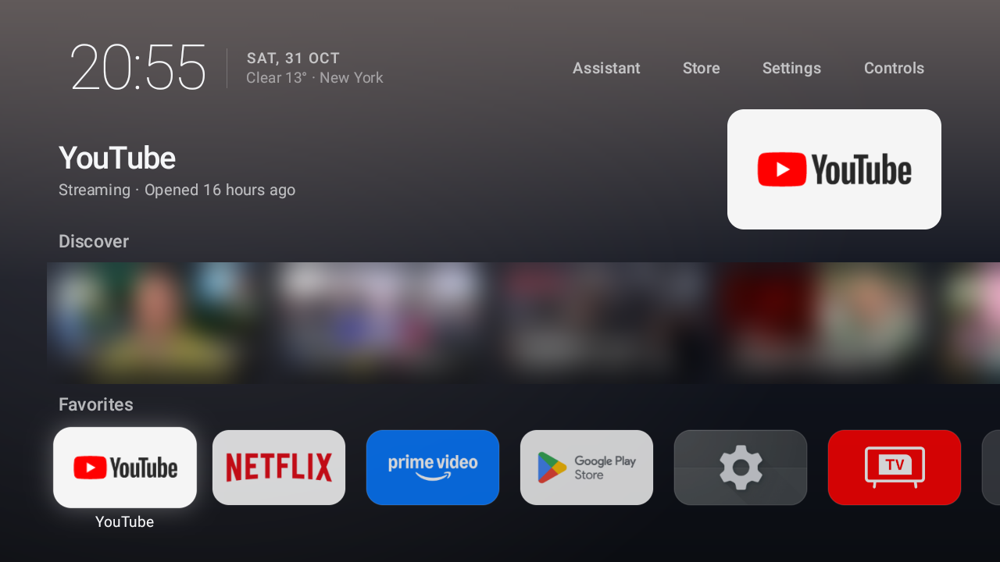
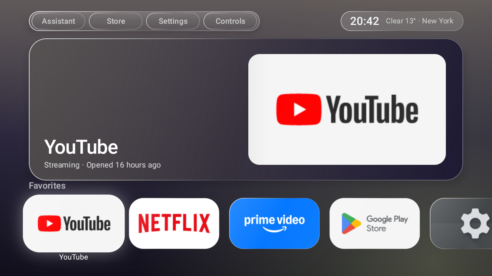
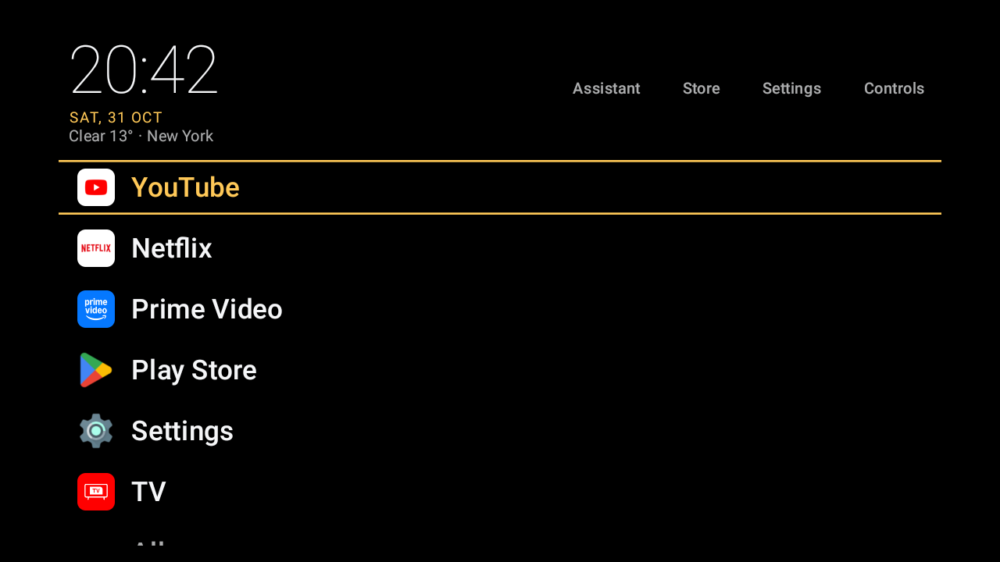
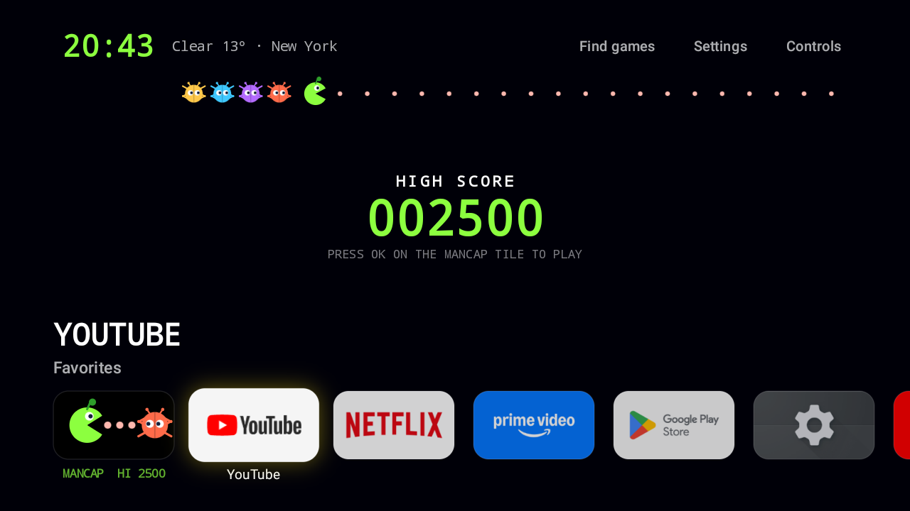
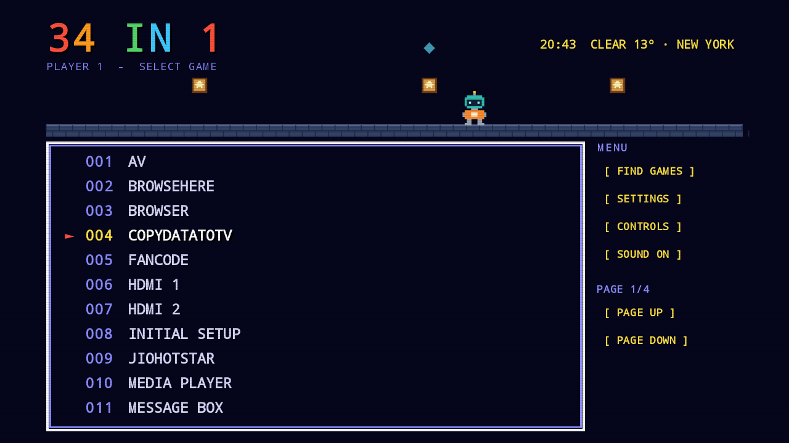
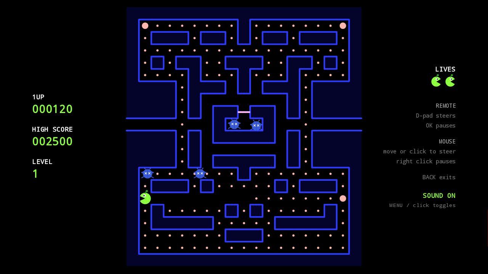
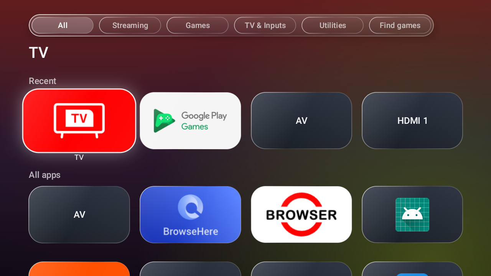
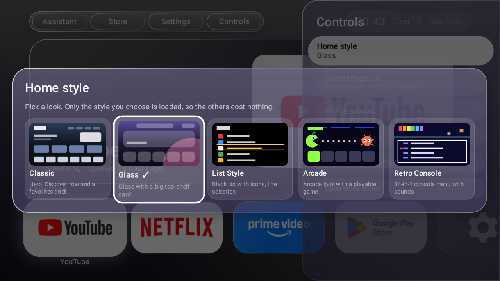
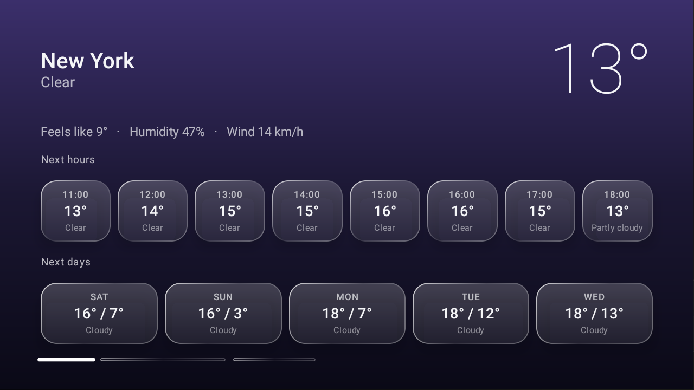

One launcher for your TV, many looks. Pick a style, and only that style is loaded.
All five styles in 12 seconds. The sounds are the app's own effects.
Switch any time from Controls, with a preview of each. Your choice is remembered.









Only the chosen style is composed, and only Classic fetches Discover.
Everything works with a D-pad; hover, click and wheel work too.
Each style has its own, synthesized in the app. One switch turns them off.
Nothing is uninstalled. Switch back to the stock home screen any time.
Tested on one TCL Android TV (Android 11, 720p). Everything else is an expectation, not a promise.
| Device | Expectation |
|---|---|
| Android TV OS 9+ (TCL, Sony, Philips, Hisense, Xiaomi, Nvidia Shield, most TV boxes) | Should install and run. Becoming the Home screen may need extra steps; some stock launchers ignore the default-home setting. |
| Google TV | Installs and runs as an app. Replacing Home depends on the firmware. |
| Fire TV | Not supported. |
Download the APK from the latest release (signed with the debug key, for sideloading).
adb connect <tv-ip>:5555 adb install -r TVWardrobe-1.0.0.apk
adb shell cmd package set-home-activity com.sidbh.tvlauncher/.MainActivity
No PC? Copy the APK to a USB drive and open it with a file manager on the TV. It runs as a normal app; making it the Home screen still needs adb. The README covers the stock launcher and how to switch back.